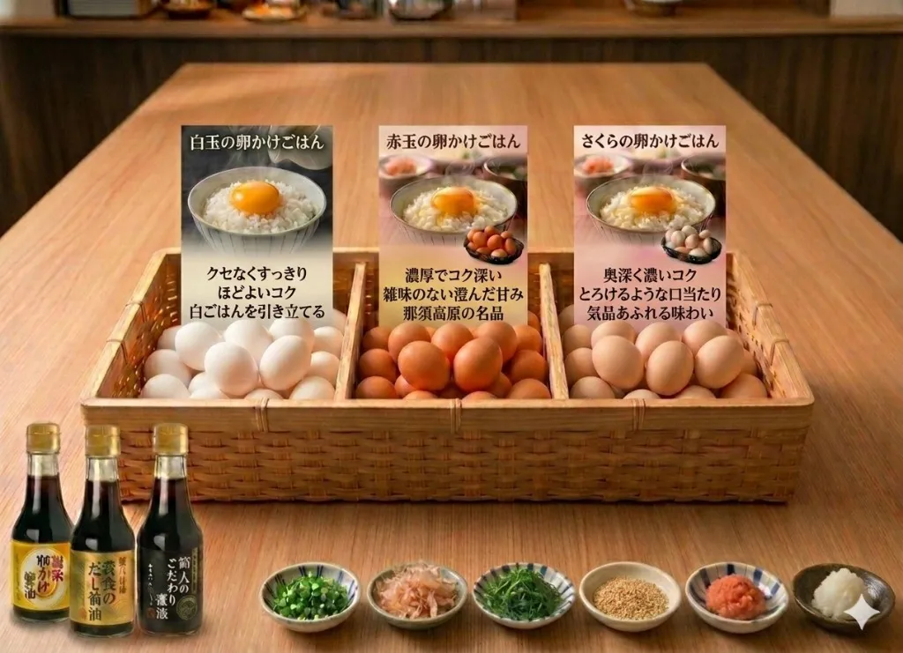
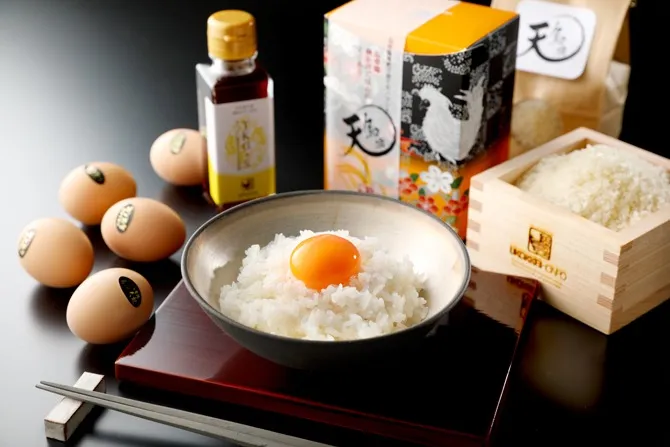
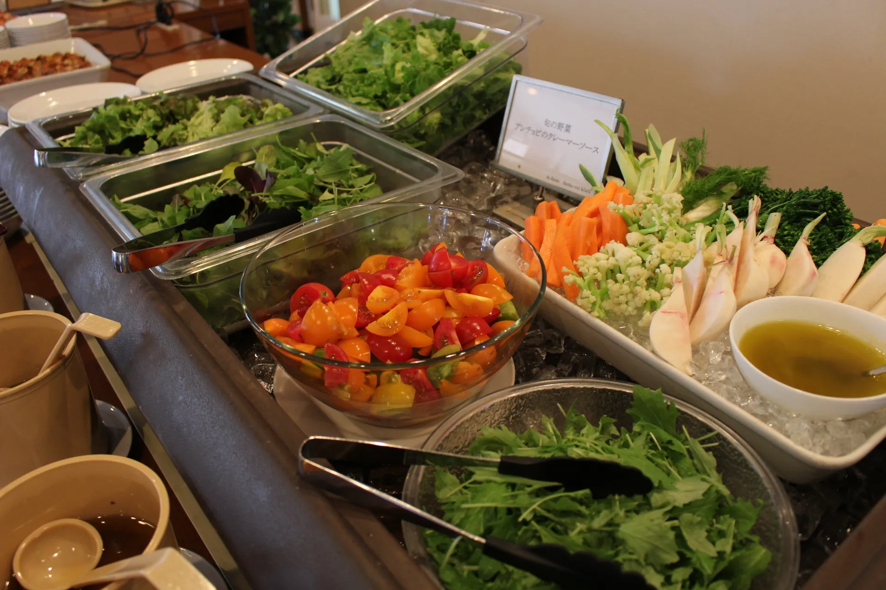
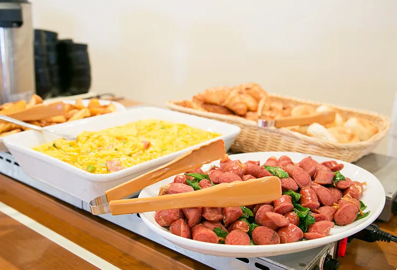
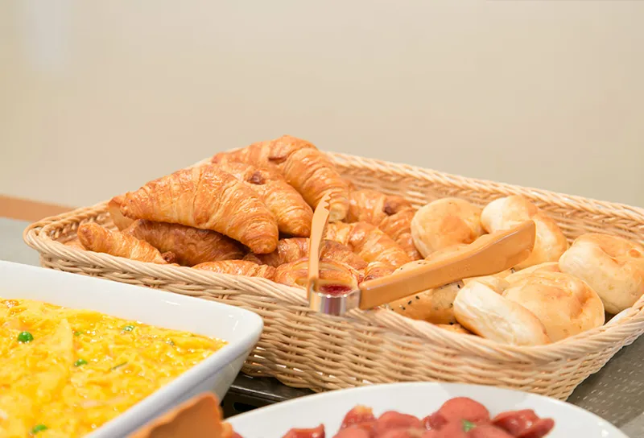
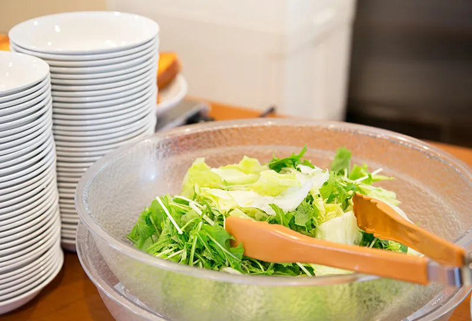
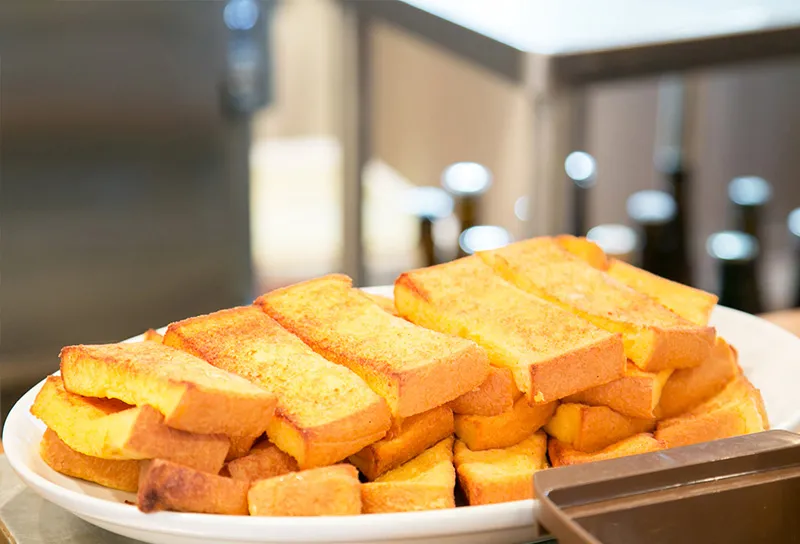

1Fレストラン「オールヴォワール」
1F Restaurant "Au Revoir"
営業時間：6:45～9:30
Hours: 6:45 AM – 9:30 AM

那須御養卵で味わう至福の朝
A Blissful Morning with Nasu Goyouran Eggs
那須御養卵で叶える、忘れられない朝食体験
An Unforgettable Breakfast with Nasu Goyouran Eggs
朝、目覚めた時に最初に想う「あの卵かけごはん」― 那須ミッドシティホテルが贈る極上のTKG体験は、 70年の歴史を持つ稲見商店の「那須御養卵」との出会いから始まります。
The first thing you think of when you wake up in the morning—that specific egg on rice. The premium TKG experience presented by Nasu Mid City Hotel begins with the encounter of "Nasu Goyouran" eggs from Inami Shoten, which has a 70-year history.
「コクと甘味」が強く、卵特有の生臭さがないオリジナル卵！
Strong richness and sweetness without the typical egg odor!
長年多くのシェフやパティシエから信頼を頂く当社一番の柱です。白玉は白い羽の鶏が産む白殻の卵で、赤玉と同じ指定配合飼料で育てられています。甘みが強く、味が濃いのが特徴です。
Our flagship product, trusted for years by many chefs and pastry artists. Shiradama are white-shelled eggs from white-feathered chickens, raised on the same premium feed as the red eggs. They are characterized by strong sweetness and deep flavor.
「コクと甘味」が強く、卵特有の生臭さがないオリジナル卵！
Strong richness and sweetness without the typical egg odor!
当社の一番の柱として長年多くのシェフやパティシエから信頼を頂き、「那須御養卵使用」とメニューやPOPに記載されるブランド卵です。テレビやネット、数多くの有名店でも紹介されています。
A flagship brand egg trusted by chefs and pâtissiers, often featured on menus as "Using Nasu Goyouran." It has been introduced widely on TV, the web, and at many famous restaurants.
〜純国産鶏「さくら」が産んだオリジナル卵〜
~ Original egg from the pure domestic "Sakura" breed ~
卵黄比率が大きく、粘度が高く濃厚な味わいが特徴です。日本で唯一の「純国産鶏」が産むさくら色の卵は、精密な卵殻膜組織により鮮度が長持ちし、起泡性が高いため卵料理をふわふわに仕上げます。
Featuring a high yolk ratio and thick, rich flavor. These cherry-colored eggs from Japan's only "pure domestic breed" stay fresh longer and create fluffy textures in egg dishes due to their high foaming properties.
こだわりの卵で作る最高の朝食
The Best Breakfast Made with Specially Selected Eggs

お好みの味で自分だけの卵かけごはんを
Customize your TKG with your favorite flavors
新鮮野菜と焼きたてパンで元気な一日を。メニュー内容は季節で変わります。
Start your day with fresh vegetables and freshly baked bread. (Menu items vary by season)





那須野原で栽培された新鮮野菜や全国から取り寄せた有機野菜を使用しています。
We use fresh vegetables grown in Nasunohara and organic vegetables sourced from across the country.
毎朝焼き上げる香ばしいクロワッサンとパンをお楽しみいただけます。
Enjoy aromatic croissants and bread baked fresh every morning.
那須の明るい朝日が差し込む心地よいレストランで、素敵な一日をスタート。
Start your wonderful day in our comfortable restaurant filled with the bright morning sun of Nasu.
3種類の那須御養卵から選べる、究極の卵かけごはん体験。
An ultimate TKG experience with a choice of three types of Nasu Goyouran eggs.
6:45～9:30
（ラストオーダー 9:15）
6:45 AM – 9:30 AM
(Last Order 9:15 AM)
宿泊のお客様：無料
外来のお客様：大人 950円
お子様（4歳～小学生）：650円～
Hotel Guests: Free
Outside Guests: Adults ¥950
Children (4–12): from ¥650
レストラン オールヴォワール
TEL: 0287-67-3332
Restaurant Au Revoir
TEL: 0287-67-3332
新鮮野菜と究極の卵かけごはんで
素敵な一日をスタートしませんか？
Why not start your wonderful day with
fresh vegetables and the ultimate Egg on Rice?